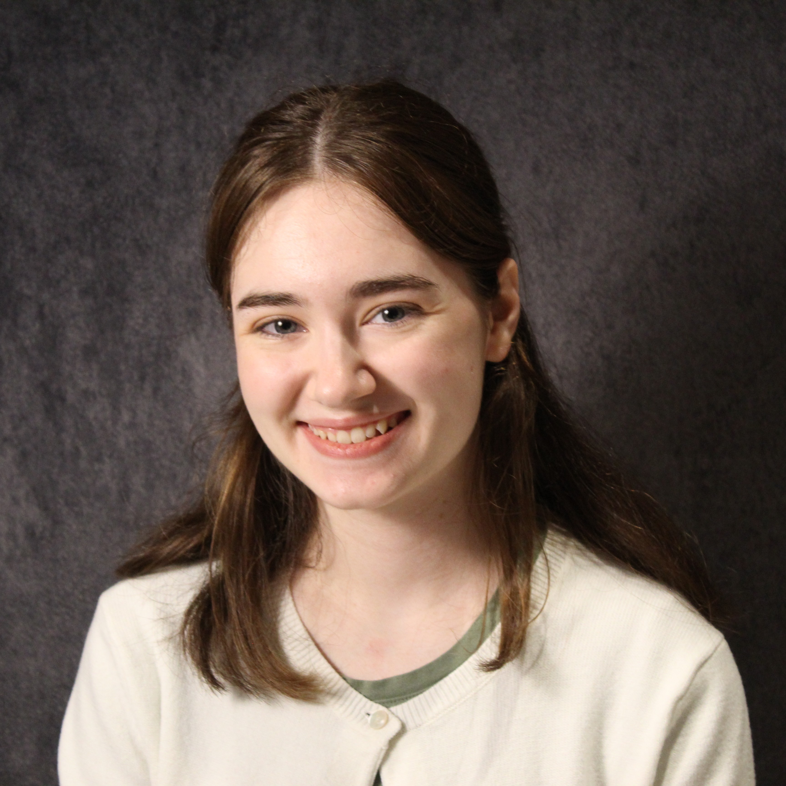

I am a junior computer science major with a concentration in web and application design at Elizabethtown College. Outside of coding, I enjoy crocheting, line dancing, reading, and watching movies with my friends.

My current schedule |
Some past CS courses I've taken |
| CS 310 - Web Development | CS 209 - Database Systems |
| CS 341 - Software Engineering | CS 221 - Data Structures |
| CS 296 - Professional Development | CS 250 - Foundations of AI & Data Science |
| EC 102 - Microeconomics | CS 222 - Systems Programming |
| PH 267 - Climate Change: Action, Ethics, and the Future | CS 230 - Computer Architecture |
This summer I had the privelege to work on developing an AI driven document to video system called BluEdu that turned student's computer science notes into short 1-2 minute long educational videos. I worked on the front end while my partner worked on the backend AI video generation pipeline. We worked on the project for 10 weeks and presented our research at the 17th Annual Landmark Conference Summer Research Symposium at Goucher College. If you are interested in learning more about the project, check out our Github.
During the academic year I also work as a peer tutor. I meet with students one-on-one to help them gain a greater understanding of course content by providing them with study materials and explaining the content in new ways. My main tutoring subject is math, more specifically probability and statistics.
During the academic year I work as a student assistant for Elizabethtown College's Technical Operations Department. Technical Operations is responsible for all of the event spaces on campus. I work as a Front of House assistant, helping welcome guests and lead them to their seats as well as a technical student assistant behind the scenes running the light or sound boards.